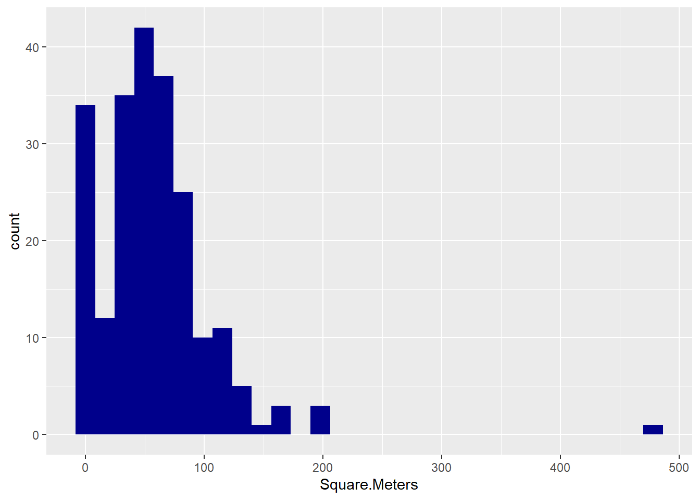
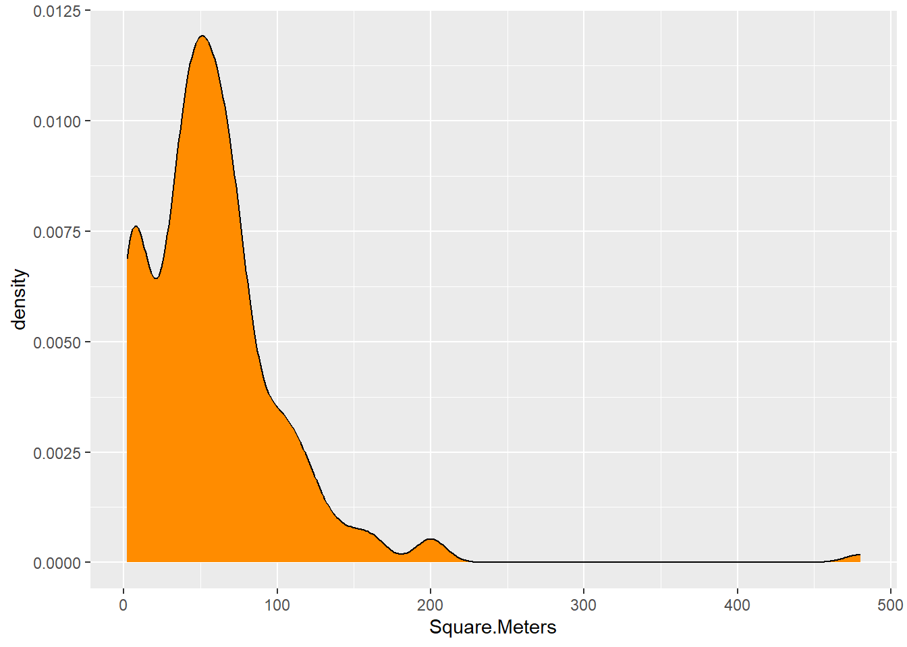

airbnb<-read.csv('airbnb-listings.csv',sep = ';')
options(repr.plot.height=4,repr.plot.width=6,repr.plot.res = 300)Vamos a cargar el dataset de AirBnB descargado de aquí

- Vamos a quedarnos con las columnas de mayor interés: ‘City’,‘Room.Type’,‘Neighbourhood’,‘Accommodates’,‘Bathrooms’,‘Bedrooms’,‘Beds’,‘Price’,‘Square.Feet’,‘Guests.Included’,‘Extra.People’,‘Review.Scores.Rating’,‘Latitude’, ‘Longitude’ Nos quedarmos solo con las entradas de Madrid para Room.Type==“Entire home/apt” y cuyo barrio (Neighbourhood) no está vacio ’’ Podemos eliminar las siguientes columnas que ya no son necesarias: “Room.Type”,‘City’ Llama a nuevo dataframe df_madrid.
airbnb <- airbnb[,c('City','Room.Type','Neighbourhood','Accommodates','Bathrooms','Bedrooms','Beds','Price','Square.Feet','Guests.Included','Extra.People','Review.Scores.Rating','Latitude', 'Longitude')]df_madrid <- airbnb[which(airbnb$City == 'Madrid' & airbnb$Room.Type == 'Entire home/apt'& airbnb$Neighbourhood != ""),]library(dplyr)
Attaching package: 'dplyr'The following objects are masked from 'package:stats':
filter, lagThe following objects are masked from 'package:base':
intersect, setdiff, setequal, union#Quitamos las columnas que ya no son necesarias:
df_madrid <- select (df_madrid, -'Room.Type', -'City')- Crea una nueva columna llamada Square.Meters a partir de Square.Feet. Recuerda que un pie cuadrado son 0.092903 metros cuadrados.
df_madrid["Square.Meters"] <- df_madrid$Square.Feet * 0.092903- ¿Que porcentaje de los apartamentos no muestran los metros cuadrados? Es decir, ¿cuantos tienen NA en Square.Meters?
#Apartamentos cuyos Square.Meters son "NA":
df_na <- df_madrid[which(is.na(df_madrid$Square.Meters)),]
na_ratio <- nrow(df_na)/nrow(df_madrid)*100
paste("El % de pisos que no muestran los m2 es: ", round(na_ratio,2))[1] "El % de pisos que no muestran los m2 es: 93.8"- De todos los apartamentos que tienen un valor de metros cuadrados diferente de NA ¿Que porcentaje de los apartamentos tienen 0 metros cuadrados?
#Apartamentos que *NO* tienen "NA m2"
df_m2 <- df_madrid[which(is.na(df_madrid$Square.Meters) == FALSE),]
#Apartamentos con 0 m2
#df_0m2 <- df_m2[which(df_m2$Square.Meters == '0'),]
#df_0m2 <- df_m2[which(df_m2$Square.Meters %in% c(0,0.000000)),]
df_0m2 <- df_m2[which(df_m2$Square.Meters == 0),]
zero_ratio <- nrow(df_0m2)/nrow(df_m2)*100
paste("El % de pisos que tienen 0 m2 es: ", round(zero_ratio,2))[1] "El % de pisos que tienen 0 m2 es: 36.89"- Reemplazar todos los 0m^2 por NA
#Reemplazamos, en la columna "Square.Meters" los valores que son iguales a 0 m2:
df_madrid[which(df_madrid$Square.Meters == 0),"Square.Meters"] <- NAHay muchos NAs, vamos a intentar crear un modelo que nos prediga cuantos son los metros cuadrados en función del resto de variables para tratar de rellenar esos NA. Pero antes de crear el modelo vamos a hacer: * pintar el histograma de los metros cuadrados y ver si tenemos que filtrar algún elemento más. * crear una variable sintética nueva basada en la similitud entre barrios que usaremos en nuestro modelo.
- Pinta el histograma de los metros cuadrados y ver si tenemos que filtrar algún elemento más
library(ggplot2)
ggplot(df_madrid, aes(x=Square.Meters)) + geom_histogram(fill='darkblue')`stat_bin()` using `bins = 30`. Pick better value with `binwidth`.Warning: Removed 5382 rows containing non-finite values (`stat_bin()`).
#Pintamos también el diagrama de densidad:
ggplot(df_madrid, aes(x=Square.Meters)) + geom_density(fill='darkorange')Warning: Removed 5382 rows containing non-finite values (`stat_density()`).
- Asigna el valor NA a la columna Square.Meters de los apartamentos que tengan menos de 20 m^2
df_madrid[which(df_madrid$Square.Meters < 20),"Square.Meters"] <- NA- Existen varios Barrios que todas sus entradas de Square.Meters son NA, vamos a eliminar del dataset todos los pisos que pertenecen a estos barrios.
#Eliminamos barrios completos si todas sus entradas son de NA m2:
df_madrid <- df_madrid |> group_by(Neighbourhood) |> filter(!all(is.na(Square.Meters)))
df_madrid# A tibble: 4,901 × 13
# Groups: Neighbourhood [38]
Neighbourhood Accommodates Bathrooms Bedrooms Beds Price Square.Feet
<chr> <int> <dbl> <int> <int> <int> <int>
1 Embajadores 2 1 1 2 50 NA
2 Embajadores 5 1 2 4 95 NA
3 La Latina 4 1 1 2 69 NA
4 Embajadores 4 1 1 2 57 NA
5 La Latina 2 1 1 1 59 NA
6 La Latina 14 2 3 14 120 NA
7 La Latina 2 1 1 1 89 NA
8 Palacio 5 3 3 3 192 NA
9 La Latina 4 1 1 1 100 NA
10 Palacio 5 2 2 2 100 NA
# ℹ 4,891 more rows
# ℹ 6 more variables: Guests.Included <int>, Extra.People <int>,
# Review.Scores.Rating <int>, Latitude <dbl>, Longitude <dbl>,
# Square.Meters <dbl>Otro modo de hacerlo …
###Agrupo por barrio y cuento NA:
#barrios <- df_madrid |> group_by(Neighbourhood) |> summarise(m2_na = sum(is.na(Square.Meters)))
###Agrupo por barrio y cuento entradas de pisos:
#t1 <- data.frame(table(df_madrid$Neighbourhood))
#colnames(t1) <- c("Neighbourhood", "Total")
###Hago merge de ambos dataframe:
#barrios_merged <- merge(barrios, t1)
###Veo los barrios con los pisos que NO tengan todos NA m^2:
#barrios_merged <- subset(barrios_merged, m2_na != Total)
#barrios_ok <- c(barrios_merged$Neighbourhood)
###Cojo los barrios que están en el vector de barrios_ok
#df_madrid <- subset(df_madrid, Neighbourhood %in% barrios_ok)El barrio parece ser un indicador importante para los metros cuadrados de un apartamento.
Vamos a agrupar los barrios por metros cuadrados. Podemos usar una matriz de similaridad de Tukey tal y como hicimos en el curso de estadística:
tky<-TukeyHSD(aov( formula=Square.Meters~Neighbourhood, data=df_madrid ))
tky.result<-data.frame(tky$Neighbourhood)
cn <-sort(unique(df_madrid$Neighbourhood))
resm <- matrix(NA, length(cn),length(cn))
rownames(resm) <- cn
colnames(resm) <- cn
resm[lower.tri(resm) ] <- round(tky.result$p.adj,4)
resm[upper.tri(resm) ] <- t(resm)[upper.tri(resm)]
diag(resm) <- 1
library(ggplot2)
library(reshape2)
dfResm <- melt(resm)
ggplot(dfResm, aes(x=Var1, y=Var2, fill=value))+
geom_tile(colour = "black")+
scale_fill_gradient(low = "white",high = "steelblue")+
ylab("Class")+xlab("Class")+theme_bw()+
theme(axis.text.x = element_text(angle = 90, hjust = 1),legend.position="none")- Usando como variable de distancia: 1-resm Dibuja un dendrograma de los diferentes barrios.
#Matriz de distancias:
d <- as.dist(1 -abs(resm))
#Creacion del cluster
hc <- hclust(d, method="complete")
#Dendrograma
airbnb.dend <- as.dendrogram(hc)
par(cex=0.7)
plot(airbnb.dend)- ¿Que punto de corte sería el aconsejable?, ¿cuantos clusters aparecen? Pintamos la evolución del error SSE: primero el ratio y luego el SSE Intra:
library(cluster)
q<-c()
for (k in 2:8){
myclust<-kmeans(1-resm,k)
q[k]<-myclust$betweenss/myclust$totss #SSE RATIO
}
plot(q) q2<-c()
for (k in 1:8){
myclust<-kmeans(1-resm,k)
q2[k]<-sum(myclust$withinss) #SSE INTRA
}
plot(q2)Parece que 4 clústers sería la cantidad óptima, ya que es el punto a partir del cual SSE se estabiliza y su variación no es notable.
library(dendextend)
---------------------
Welcome to dendextend version 1.17.1
Type citation('dendextend') for how to cite the package.
Type browseVignettes(package = 'dendextend') for the package vignette.
The github page is: https://github.com/talgalili/dendextend/
Suggestions and bug-reports can be submitted at: https://github.com/talgalili/dendextend/issues
You may ask questions at stackoverflow, use the r and dendextend tags:
https://stackoverflow.com/questions/tagged/dendextend
To suppress this message use: suppressPackageStartupMessages(library(dendextend))
---------------------
Attaching package: 'dendextend'The following object is masked from 'package:stats':
cutree plot(color_branches(airbnb.dend,k=4),cex=0.2) #Aplicamos cutree al objeto hclust para k=4 clústers
clusters <- cutree(hc, k=4) #Pintamos el silhouette:
ss<-silhouette(clusters, d, full=TRUE)
plot(ss, col=1:max(clusters),border=NA)No nos sale muy bonito ya que tenemos bastantes entradas con valores que tienen poco sentido estadístico. He querido graficarlo simplemente por ver qué aspecto tenía y por practicar ese código
- Vamos a crear una nueva columna en el dataframe df_madrid con un nuevo identificador marcado por los clusters obtenidos. Esta columna la llamaremos neighb_id
#Creamos un dataframe correspondiente a los clusters definidos arriba con cutree:
df_clusters <- data.frame(clusters)
#Podemos obtener los nombres de los barrios de este clúster:
df_clusters$Neighbourhood <- names(clusters)
#Mergeamos con el df_madrid, ya que ambos df tienen la columna Neighbourhood en común y R aplicará los mismos valores de nºde cluster según el barrio
df_madrid <- merge(df_madrid, df_clusters)
#Renombro la columna según el enunciado y la transformo a tipo factor:
colnames(df_madrid)[14] <- 'neighb_id'
df_madrid$neighb_id <- factor(df_madrid$neighb_id)
head(df_madrid) Neighbourhood Accommodates Bathrooms Bedrooms Beds Price Square.Feet
1 Acacias 2 1 1 1 50 NA
2 Acacias 3 1 1 2 45 NA
3 Acacias 2 1 1 1 65 NA
4 Acacias 4 1 2 4 70 0
5 Acacias 4 1 2 2 45 NA
6 Acacias 4 1 1 2 60 753
Guests.Included Extra.People Review.Scores.Rating Latitude Longitude
1 1 0 69 40.40221 -3.711326
2 2 10 100 40.40404 -3.703835
3 1 0 100 40.40233 -3.705738
4 4 15 91 40.40226 -3.703189
5 2 25 89 40.40068 -3.704121
6 2 12 85 40.40073 -3.706203
Square.Meters neighb_id
1 NA 1
2 NA 1
3 NA 1
4 NA 1
5 NA 1
6 69.95596 1- Vamos a crear dos grupos, uno test y otro train.
#Genero variable aleatoria para dividir el dataset original en train y test:
set.seed(1111)
idx <- sample(1:nrow(df_madrid),nrow(df_madrid)*0.7)
#Para train tomo las primeras muestras:
df_madrid.train <- df_madrid[idx,]
#Para test, las restantes:
df_madrid.test <- df_madrid[-idx,]- Tratamos de predecir los metros cuadrados en función del resto de columnas del dataframe.
Voy a probar con casi todas las columnas excepto la del Barrio (no es numérica) y la Latitud y Longitud (pueden ser redundantes). Tampoco podemos incluir Square.Feet ya que es proporcional a Square.Meters!
model_m2 <- lm(Square.Meters ~ Accommodates + Bathrooms + Bedrooms + Beds + Price + Review.Scores.Rating + neighb_id, data = df_madrid.train)
summary(model_m2)
Call:
lm(formula = Square.Meters ~ Accommodates + Bathrooms + Bedrooms +
Beds + Price + Review.Scores.Rating + neighb_id, data = df_madrid.train)
Residuals:
Min 1Q Median 3Q Max
-108.869 -10.939 -1.914 11.095 108.869
Coefficients:
Estimate Std. Error t value Pr(>|t|)
(Intercept) -45.27683 25.93298 -1.746 0.08359 .
Accommodates 4.10334 2.45786 1.669 0.09784 .
Bathrooms 14.13247 6.16466 2.292 0.02376 *
Bedrooms 10.09481 4.26053 2.369 0.01954 *
Beds 1.88955 2.84476 0.664 0.50793
Price 0.15286 0.05348 2.858 0.00509 **
Review.Scores.Rating 0.45523 0.27673 1.645 0.10279
neighb_id2 9.94182 12.42062 0.800 0.42517
neighb_id3 104.67861 21.11565 4.957 2.59e-06 ***
neighb_id4 -1.55080 6.31362 -0.246 0.80642
---
Signif. codes: 0 '***' 0.001 '**' 0.01 '*' 0.05 '.' 0.1 ' ' 1
Residual standard error: 25.03 on 111 degrees of freedom
(3309 observations deleted due to missingness)
Multiple R-squared: 0.7576, Adjusted R-squared: 0.738
F-statistic: 38.55 on 9 and 111 DF, p-value: < 2.2e-16Nos sale un R2 bastante bueno: 0.7576
#Vamos a mirar la distancia de Cooks de este modelo:
plot(cooks.distance(model_m2))
No hay casi outliers, muy buena señal. Ahora vamos a ver qué tal es nuestro modelo pintando los residuos del df de train:
df_madrid.train$m2_est <- predict(model_m2, df_madrid.train)
plot(df_madrid.train$Square.Meters,(df_madrid.train$Square.Meters - df_madrid.train$m2_est))Se ve que aumentan un poco a medida que crecen los m2 y también se aprecian los outliers que vimos en la Distancia de Cooks. Pero en general parecen bastante próximos a 0
- Mirad el histograma de los residuos sobre el conjunto de test para evaluar la calidad de vuestro modelo
df_madrid.test$m2_est <- predict(model_m2,df_madrid.test)
#Pintamos histograma de residuos del df de test:
hist(df_madrid.test$Square.Meters-df_madrid.test$m2_est, xaxp=c(-100,100,10))Sigue más o menos una distribución normal, aunque bastante abierta (de -40 a +40), no es muy buen modelo Calculamos métricas del modelo eliminando los NA de ambos df (train y test):
df_madrid.train.cl <- na.omit(subset(df_madrid.train, select=c(Accommodates,Bathrooms, Bedrooms, Beds, Price,Review.Scores.Rating, neighb_id, Square.Meters)))
df_madrid.test.cl <- na.omit(subset(df_madrid.test, select=c(Accommodates,Bathrooms, Bedrooms, Beds, Price,Review.Scores.Rating, neighb_id, Square.Meters)))
caret::postResample(pred=predict(model_m2,df_madrid.train.cl),
obs= df_madrid.train.cl$Square.Meters) RMSE Rsquared MAE
23.9702586 0.7576366 15.2027003 caret::postResample(pred=predict(model_m2,df_madrid.test.cl),
obs= df_madrid.test.cl$Square.Meters) RMSE Rsquared MAE
26.2944563 0.6494593 18.5775482 El RMSE sube un poco en test con respecto a train, y el R2 baja otro tanto. Esto entra dentro de los valores esperados para un modelo de regresión lineal. Aún así, voy a ver si eliminando variables mi modelo mejora…
Pruebo a eliminar la variable Beds y la de Review.Scores.Rating, que son las que tienen mayor p-valor:
#Elimino Beds y Review.Scores.Rating, que tienen el mayor p-valor
model_m2.2 <- lm(Square.Meters ~ Accommodates + Bathrooms + Bedrooms + Price + neighb_id, data = df_madrid.train)
summary(model_m2.2)
Call:
lm(formula = Square.Meters ~ Accommodates + Bathrooms + Bedrooms +
Price + neighb_id, data = df_madrid.train)
Residuals:
Min 1Q Median 3Q Max
-117.815 -9.255 -1.375 8.817 117.815
Coefficients:
Estimate Std. Error t value Pr(>|t|)
(Intercept) -1.50931 5.88624 -0.256 0.79808
Accommodates 3.39406 1.82872 1.856 0.06597 .
Bathrooms 14.70914 6.25351 2.352 0.02034 *
Bedrooms 12.95272 4.01346 3.227 0.00162 **
Price 0.15815 0.05122 3.088 0.00252 **
neighb_id2 -1.75025 11.26882 -0.155 0.87684
neighb_id3 113.38410 21.21025 5.346 4.51e-07 ***
neighb_id4 -1.38253 6.38847 -0.216 0.82905
---
Signif. codes: 0 '***' 0.001 '**' 0.01 '*' 0.05 '.' 0.1 ' ' 1
Residual standard error: 25.46 on 117 degrees of freedom
(3305 observations deleted due to missingness)
Multiple R-squared: 0.7418, Adjusted R-squared: 0.7264
F-statistic: 48.03 on 7 and 117 DF, p-value: < 2.2e-16#Vamos a mirar la distancia de Cooks de este modelo:
plot(cooks.distance(model_m2.2))Vamos a ver qué tal es nuestro nuevo modelo model_m2.2 pintando los residuos de train y de test:
df_madrid.train$m2_est <- predict(model_m2.2, df_madrid.train)
plot(df_madrid.train$Square.Meters,(df_madrid.train$Square.Meters - df_madrid.train$m2_est))#Ahora con df de test:
df_madrid.test$m2_est <- predict(model_m2.2,df_madrid.test)
#Pintamos histograma:
hist(df_madrid.test$Square.Meters-df_madrid.test$m2_est, xaxp=c(-100,100,10))Sigue también más o menos una distribución normal, pero lo interesante es que la distribución se contrae con respecto al modelo anterior, lo cual me indica que es un modelo un poco mejor, menos residuos.
Calculamos métricas del modelo model_m2.2 eliminando los NA de ambos df (train y test):
#Calculamos métricas del modelo model_m2.2 eliminando los NA:
df_madrid.train.cl <- na.omit(subset(df_madrid.train, select=c(Accommodates,Bathrooms, Bedrooms, Beds, Price,Review.Scores.Rating, neighb_id, Square.Meters)))
df_madrid.test.cl <- na.omit(subset(df_madrid.test, select=c(Accommodates,Bathrooms, Bedrooms, Beds, Price,Review.Scores.Rating, neighb_id, Square.Meters)))
caret::postResample(pred=predict(model_m2.2,df_madrid.train.cl),
obs= df_madrid.train.cl$Square.Meters) RMSE Rsquared MAE
24.469266 0.748089 14.595078 caret::postResample(pred=predict(model_m2.2,df_madrid.test.cl),
obs= df_madrid.test.cl$Square.Meters) RMSE Rsquared MAE
27.2166985 0.6239442 19.2529764 R2 baja un poco, pero es asumible sobre todo porque nuestro modelo se ha simplificado, que es lo que siempre buscamos. Así que el “sacrificio” de R2, si es por simplificar el modelo, siempre será para mejor.
- Si tuvieramos un anuncio de un apartamento para 6 personas (Accommodates), con 1 baño, con un precio de 80€/noche y 3 habitaciones en el barrio de Sol, con 3 camas y un review de 80. ¿Cuantos metros cuadrados tendría? Si tu modelo necesita algúna variable adicional puedes inventartela dentro del rango de valores del dataset. ¿Como varía sus metros cuadrados con cada habitación adicional?
#Variables para el piso de ejemplo:
ej_accommodates <- 6
ej_bath <- 1
ej_price <- 80
ej_bedrooms <- 3
ej_neighb <- 'Sol'
ej_beds <- 3
ej_review <- 80
#Veo en qué clúster está Sol --> Pertenece al cluster 2
ej_neighb <- factor(unique(df_madrid[which(df_madrid$Neighbourhood == 'Sol'),"neighb_id"]))
#Aplico el predict con estos datos y mi modelo:
#NOTA: Mi modelo no necesita : ej_beds ni ej_review
m2_piso_ej <- predict(model_m2.2, data.frame(Accommodates = ej_accommodates, Bathrooms = ej_bath, Bedrooms = ej_bedrooms, Price = ej_price, neighb_id = ej_neighb ))
paste("Según los datos y el modelo, el piso tendría ",round(m2_piso_ej,2),'m2')[1] "Según los datos y el modelo, el piso tendría 83.69 m2" paste("Cada habitación adicional sumaría ", round(model_m2$coefficients["Bedrooms"],2), 'm2')[1] "Cada habitación adicional sumaría 10.09 m2" #paste("Cada habitación adicional sumaría ", model_m2$coefficients[4])- Rellenar los Square.Meters con valor NA con el estimado con el modelo anterior.
#Para cada fila (pero del df de los square.meters==NA), coger los indices de nuestro modelo lm y aplicarselos a la columna $Square.Meters cuando sea == NA
df_madrid$Square.Meters[which(is.na(df_madrid$Square.Meters))] <- predict(model_m2, df_madrid[which(is.na(df_madrid$Square.Meters)),])
head(df_madrid) Neighbourhood Accommodates Bathrooms Bedrooms Beds Price Square.Feet
1 Acacias 2 1 1 1 50 NA
2 Acacias 3 1 1 2 45 NA
3 Acacias 2 1 1 1 65 NA
4 Acacias 4 1 2 4 70 0
5 Acacias 4 1 2 2 45 NA
6 Acacias 4 1 1 2 60 753
Guests.Included Extra.People Review.Scores.Rating Latitude Longitude
1 1 0 69 40.40221 -3.711326
2 2 10 100 40.40404 -3.703835
3 1 0 100 40.40233 -3.705738
4 4 15 91 40.40226 -3.703189
5 2 25 89 40.40068 -3.704121
6 2 12 85 40.40073 -3.706203
Square.Meters neighb_id
1 28.10014 1
2 47.44075 1
3 44.50501 1
4 65.14240 1
5 56.63141 1
6 69.95596 1- Usar PCA para encontrar el apartamento más cercano a uno dado. Este algoritmo nos ayudaría a dado un apartamento que el algoritmo nos devolvería los 5 apartamentos más similares.
Crearemos una función tal que le pasemos un apartamento con los siguientes datos: * Accommodates * Bathrooms * Bedrooms * Beds * Price * Guests.Included * Extra.People * Review.Scores.Rating * Latitude * Longitude * Square.Meters
y nos devuelva los 5 más similares
#Nos quedamos con las columnas del enunciado:
df_madrid.pca <- df_madrid[c("Accommodates","Bathrooms","Bedrooms","Beds","Price", "Guests.Included","Extra.People","Review.Scores.Rating", "Latitude","Longitude", "Square.Meters")]
#Hacemos na.omit()
df_madrid.pca <- na.omit(df_madrid.pca)
#df_madrid.pca <- matrix(df_madrid.pca)
#Utilizamos prcomp para calcular el PCA
prdfmad<-prcomp(df_madrid.pca, center=TRUE, scale. = TRUE)
plot(prdfmad$sdev^2/sum(prdfmad$sdev^2),main="Autovalores")prdfmadStandard deviations (1, .., p=11):
[1] 2.2158538 1.1763188 1.0291595 1.0119673 0.8225454 0.7709186 0.7035049
[8] 0.5731226 0.5195499 0.3839315 0.3337636
Rotation (n x k) = (11 x 11):
PC1 PC2 PC3 PC4
Accommodates 0.40380564 -0.067164855 0.004506386 -0.157634813
Bathrooms 0.35687094 0.069886389 0.177516743 0.126864524
Bedrooms 0.39169462 0.009388749 0.121324461 -0.038072409
Beds 0.38682645 -0.043232772 0.074360502 -0.113864159
Price 0.34895181 0.029288543 0.161698417 0.139029628
Guests.Included 0.29259326 -0.101458498 -0.395824506 -0.172009738
Extra.People 0.13619858 -0.141101724 -0.813020000 -0.123844006
Review.Scores.Rating 0.04331043 -0.105199553 -0.223586548 0.928161260
Latitude 0.02019624 0.693501960 -0.131712708 -0.005606895
Longitude 0.03996132 0.681095979 -0.156264170 0.048812148
Square.Meters 0.42037594 0.041019066 0.112408984 0.128416473
PC5 PC6 PC7 PC8
Accommodates 0.16486889 -0.20205067 0.18848194 -0.024078819
Bathrooms -0.26704696 0.31211191 -0.23199911 0.726128071
Bedrooms 0.14934767 -0.05070079 0.24900751 0.009447945
Beds 0.22893180 -0.19048534 0.36454701 -0.057138479
Price -0.40812850 0.27575601 -0.27243348 -0.677842272
Guests.Included 0.20914829 -0.36444174 -0.72047994 0.015460878
Extra.People -0.27070074 0.34023673 0.30744554 0.021786585
Review.Scores.Rating 0.13687262 -0.20146233 0.06181569 0.001834630
Latitude -0.46895210 -0.51634698 0.11240209 0.039034687
Longitude 0.55006799 0.43137263 -0.07906686 -0.084211952
Square.Meters -0.04442873 0.07072923 0.07218463 0.001264981
PC9 PC10 PC11
Accommodates -0.25653668 0.715764541 0.354004861
Bathrooms -0.15857621 -0.085839595 0.194483622
Bedrooms 0.78554437 -0.205160941 0.290134046
Beds -0.50121988 -0.588372380 -0.088002892
Price -0.09697676 -0.077612977 0.200425876
Guests.Included 0.06802800 -0.113429563 -0.066676246
Extra.People 0.02287196 -0.025289641 -0.001164944
Review.Scores.Rating -0.03782668 0.001460402 0.104901241
Latitude 0.01229722 -0.015253953 0.013976464
Longitude -0.05972669 0.025714582 0.038488443
Square.Meters 0.14503932 0.267607838 -0.829238097Me quedo con los primeros 4 autovalores, que contienen aproximadamente un 80% de la información
#Veo estructura del PCA:
str(prdfmad)List of 5
$ sdev : num [1:11] 2.216 1.176 1.029 1.012 0.823 ...
$ rotation: num [1:11, 1:11] 0.404 0.357 0.392 0.387 0.349 ...
..- attr(*, "dimnames")=List of 2
.. ..$ : chr [1:11] "Accommodates" "Bathrooms" "Bedrooms" "Beds" ...
.. ..$ : chr [1:11] "PC1" "PC2" "PC3" "PC4" ...
$ center : Named num [1:11] 4.13 1.24 1.42 2.38 87.17 ...
..- attr(*, "names")= chr [1:11] "Accommodates" "Bathrooms" "Bedrooms" "Beds" ...
$ scale : Named num [1:11] 1.9 0.504 0.946 1.524 54.23 ...
..- attr(*, "names")= chr [1:11] "Accommodates" "Bathrooms" "Bedrooms" "Beds" ...
$ x : num [1:4187, 1:11] -2.353 -1.153 -1.883 0.835 -0.299 ...
..- attr(*, "dimnames")=List of 2
.. ..$ : chr [1:4187] "1" "2" "3" "4" ...
.. ..$ : chr [1:11] "PC1" "PC2" "PC3" "PC4" ...
- attr(*, "class")= chr "prcomp"number_of_pca_components <- 4
knn<-6
#Vector con los datos del piso a comparar:
new_vector <- matrix(c( 3, 1, 1, 1, 50, 1, 0 , 69, 40.40221, -3.711326, 28.10014), nrow=1)
colnames(new_vector) <- c("Accommodates","Bathrooms","Bedrooms","Beds","Price", "Guests.Included","Extra.People","Review.Scores.Rating", "Latitude","Longitude", "Square.Meters")
#Prediccion. Ponemos el piso de ejemplo en el dominio PCA con predict:
apartm <- predict(prdfmad, new_vector)
#Nos quedamos con los componentes ppales de ese piso:
apartm <- matrix(apartm[1:number_of_pca_components],nrow=1)
#Nos quedamos con los componentes ppales de la matriz de rotacion:
Apc<-prdfmad$x[,1:number_of_pca_components]
#Matriz de distancia:
dist<-rowSums((apartm[rep(1, times = nrow(Apc)), ]- Apc)^2)
#El piso más similar es:
knn_tags <- rownames(df_madrid.pca)[order(dist,decreasing = F) %in% c(1:knn)]
similar_apartm <- data.frame(df_madrid.pca[knn_tags,])
paste("Los 5 pisos más similares al dado son: ")[1] "Los 5 pisos más similares al dado son: "head(similar_apartm[2:6,]) Accommodates Bathrooms Bedrooms Beds Price Guests.Included Extra.People
537 6 1.5 3 6 120 4 15
1827 4 2.0 2 3 158 2 20
2160 2 1.0 0 2 50 1 0
2377 2 1.0 1 1 40 1 0
2959 4 1.0 1 1 99 2 0
Review.Scores.Rating Latitude Longitude Square.Meters
537 100 40.44938 -3.677349 106.02913
1827 100 40.42641 -3.673278 94.93381
2160 97 40.42575 -3.692857 32.64121
2377 92 40.40858 -3.706100 37.04176
2959 97 40.42722 -3.709042 56.54316